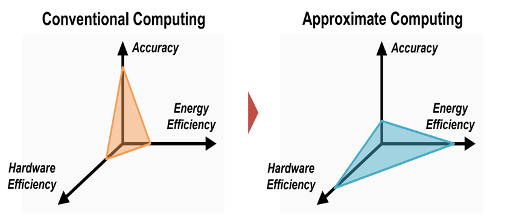
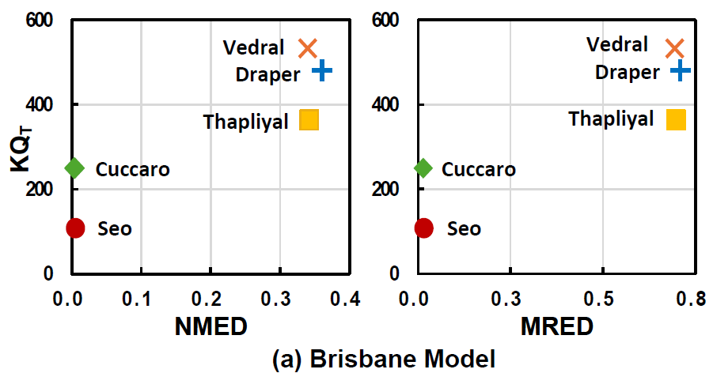
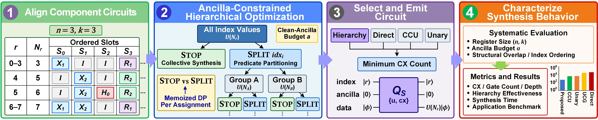

RESEARCH & ENGINEERING
김동주Dongju Kim
정확도와 자원 효율을 고려한
Dongju Kim received his B.S. degree from the School of Computer Science and Engineering at Kyungpook National University, Daegu, Republic of Korea, in 2025. He is currently pursuing an M.S. degree at the same university in the Scalable Energy Efficient Computing Lab (SCENT), advised by Professor Yongtae Kim.
오차 분석을 바탕으로 회로를 설계하고,
Approximate Computing
오차를 고려한
허용 가능한 연산 오차를 활용해 회로 비용을 줄이는 근사 4-2 압축기와 오류 보정 곱셈기를 설계했습니다. 8비트 입력 전체 65,536쌍의 오차를 분석하고, 면적·전력·지연과 이미지 처리·CNN 추론 정확도를 함께 평가했습니다.
사용 기술 Verilog · C/C++ · Synopsys Design Compiler

이미지 확대 ↗
정확도와 에너지·하드웨어 효율 간의 관계를 나타낸 근사 컴퓨팅 개념도
Quantum Computing
양자 가산기의
기존 양자 가산기 5종을 Qiskit으로 동일 조건에서 비교했습니다. IBM 보정 자료에 기반한 잡음 시뮬레이션으로 회로 구조별 자원 사용량과 계산 오차의 관계를 분석했습니다.
사용 기술 Qiskit · Noise Simulation · Resource Analysis

이미지 확대 ↗
Brisbane 잡음 모형에서의 자원·오차 비교
Quantum Circuit Synthesis
자원 효율적
인덱스별 상태 준비 회로의 공통 구조를 활용하고, 공동 합성과 분할 합성의 비용을 비교했습니다. 동적 계획법으로 보조 큐비트 예산 안에서 비용 모델의 CX 수가 작은 합성 계층을 선택했습니다.
핵심 방법 Dynamic Programming · Ancilla Budget · CX Cost

이미지 확대 ↗
보조 큐비트 예산을 고려한 계층적 회로 합성 흐름
02 / PUBLICATIONS
Publications Published · 게재 Accepted · 게재 승인 Submitted · 투고
Journal 학술지
2026 Submitted
Error-Compensated Approximate 4-2 Compressor with Conditional Swap for Efficient Multipliers
Dongju Kim , Seokhyeon Lee, Hyelin Seok, Sanghyeon Maeng, and Yongtae Kim
Ain Shams Engineering Journal
1st author Submitted · September 24, 2026
2026 Accepted
Design Exploration of Quantum Adders for Resource Efficiency and Computational Accuracy in NISQ Systems
Dongju Kim and Yongtae Kim
KSII Transactions on Internet and Information Systems
1st author Accepted · August 13, 2026
2025 Published
Dongju Kim and Yongtae Kim
Journal of Semiconductor Technology and Science , 25(6), 633–644
1st author December 2025 DOI ↗ 새 탭
Conference 학술대회
2026 Submitted
Ancilla-Constrained Hierarchical Quantum Circuit Synthesis for Indexed Uniform State Preparation
Dongju Kim , Sanghyeon Maeng, and Yongtae Kim
Design, Automation and Test in Europe (DATE)
1st author Submitted · September 20, 2026
2025 Published
Empirical Analysis of T-count Effects on Reliability of Quantum Multipliers in NISQ Hardware
Sanghyeon Maeng† , Dongju Kim† , and Yongtae Kim
International System-on-Chip Design Conference (ISOCC)
† Equal contributionsOctober 2025
Undergraduate Research Fellowship participant
Publication status updated · October 12, 2026
03 / PROJECTS
Projects & Competitions 지역 협업을 돕는 웹 서비스와
로컬 협업 매칭 플랫폼
2024 대구를 빛내는 해커톤
대구 지역 상인과 로컬 크리에이터의 협업을 연결하는 웹 플랫폼입니다. 관심 키워드를 활용한 파트너 추천, 협업 신청과 온라인 협업 관리 기능을 구현한 팀 프로젝트입니다.
팀원 전지웅, 김동주 , 윤우린, 홍송은
팀 사용 기술 React · Python/Flask · SentenceTransformer · Firebase GitHub에서 프로젝트 보기 ↗ 새 탭
EMBEDDED SYSTEM · 2023
최우수상 ALGORITHM
ALlowing GOing RIght TeacHing Model
제21회 임베디드 소프트웨어 경진대회
카메라로 보행자와 신호 상태를 파악하고 우회전 상황에서 운전자에게 경고하는 시스템입니다. Raspberry Pi와 자이로·충격 센서, 디스플레이·스피커를 결합한 팀 프로젝트입니다.
개발 기간 2023.08–2023.10
팀원 최희정, 김동주 , 전지웅, 윤우린 GitHub에서 프로젝트 보기 ↗ 새 탭
04 / TEACHING
Teaching Assistant 2026
COMP0411
Computer Architectures School of Computer Science and Engineering
2nd Semester 2026 · 2학기 1st Semester 2026 · 1학기